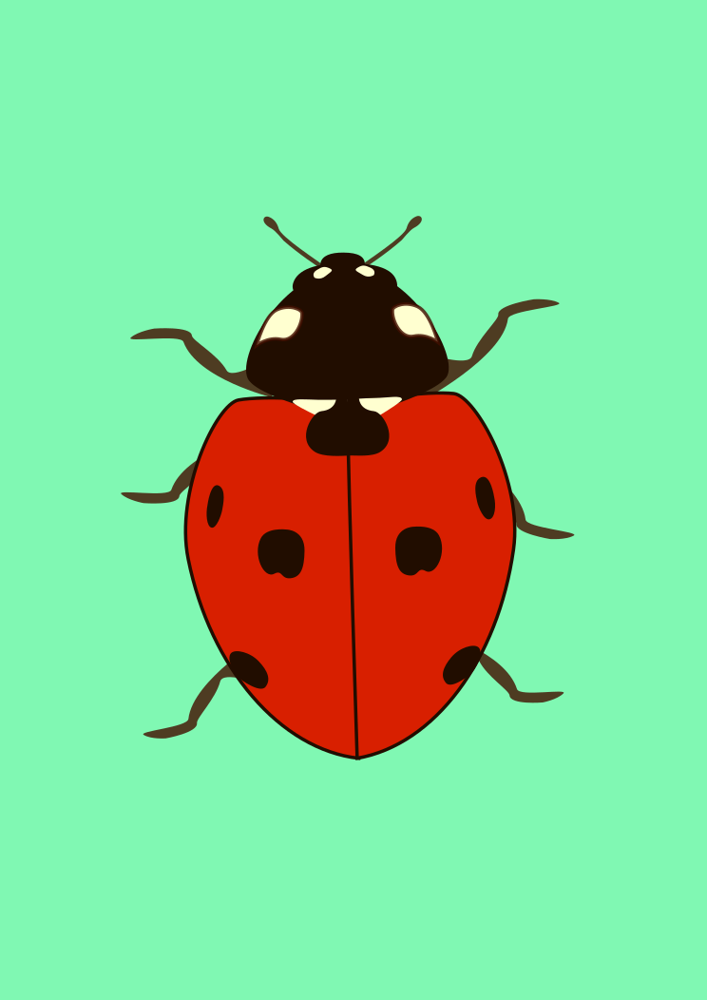
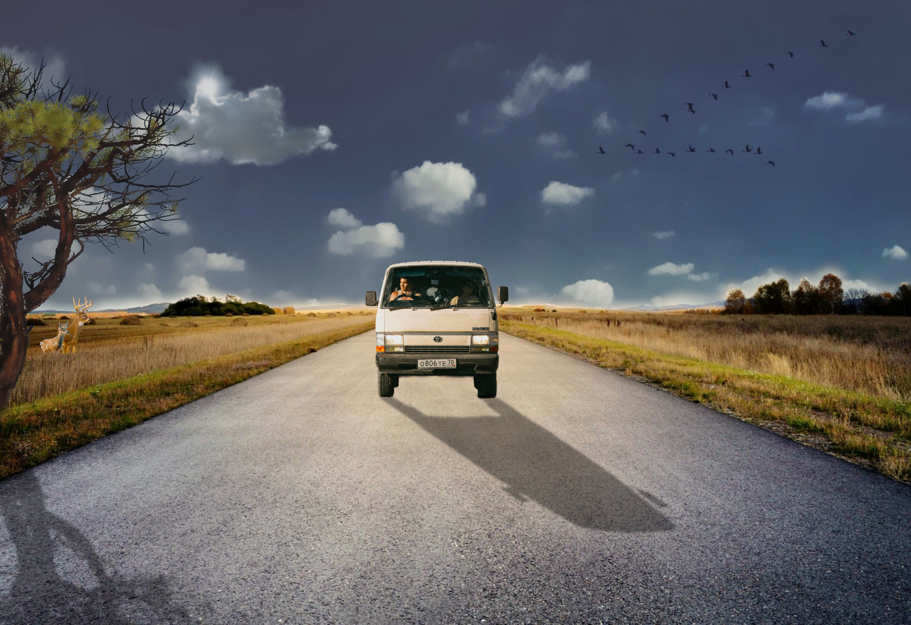
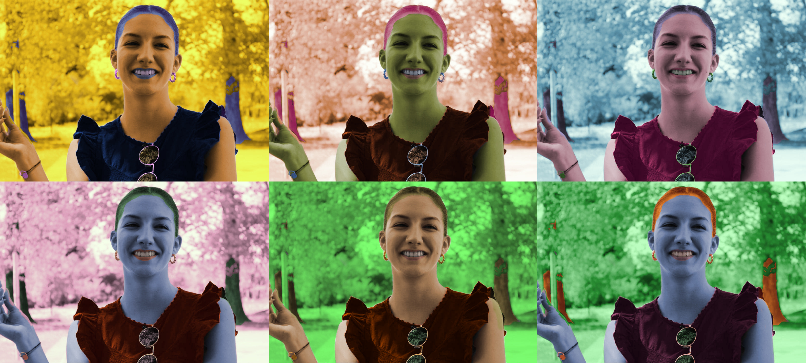
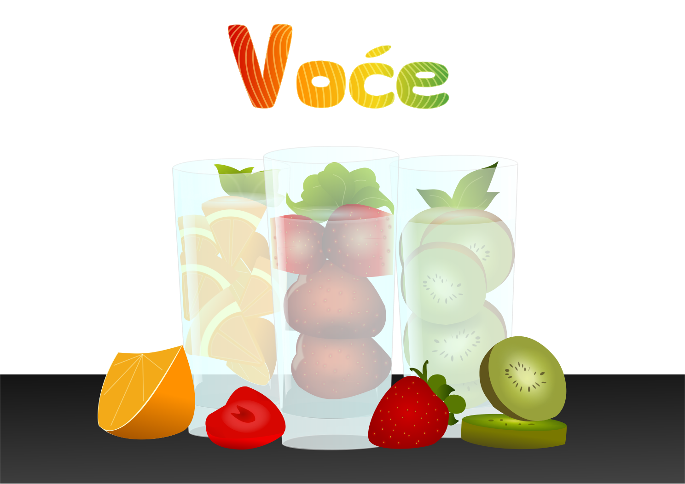

Bokić! Ja sam Klara Markulin. Dobrodošli na moju stranicu!
Bokić! Ja sam Klara Markulin. Dobrodošli na moju stranicu!
Zadatak rađen u Adobe Illustratoru. Korišten pen tool i blend.
Korišten je program Adobe Photoshop, a alati koji su korišteni su channels, levels, maske i slično.
Zadatak je bio kolorirati sliku sebe koristeći kanale u Photoshopu.
Projektni zadatak je bio iskoristiti sve što smo naučili u piksel grafici, tj. koloriranje, sjene,
Zadatak je bio preko predloška napraviti svoj rad koriteći sve što je naučeno u Illustratoru, kao npr. pen tool, gradijenti itd.
